MS-12 is a sampler and step sequencer with the essentials covered. This
manual walks through each screen in the order you would use it to build a
track.
About the free version
This manual describes the app in full. In the free version some of what
follows is limited — you get Bank A only, one 1-bar pattern, two effects,
and microphone sampling up to 10 seconds per pad, and saving, loading and
exporting are reserved for the full version. A single purchase unlocks
everything.
GETTING STARTEDMaking a pattern
The basic route from an empty project to a finished track.
Sample a soundRecord an external source or the app's own
output on the Sampling screen.
Edit the sampleShape the waveform and, if you want, chop
it into slices on the Edit Sample screen.
Assign it to a padPut the sample on a pad and set how it
plays — tune, ADSR and so on — on the Assign screen.
Record a sequencePress REC on the top screen and play the
pads along with the pattern.
Edit the sequenceAdjust step positions, velocity and pitch
on the Edit Seq screen.
Add effects (optional)Apply effects such as delay to
individual pads on the Effect screen.
Balance the mixSet level and pan for each pad on the Mix
screen.
ExportBounce the finished pattern to a WAV file.
SCREENTop screen
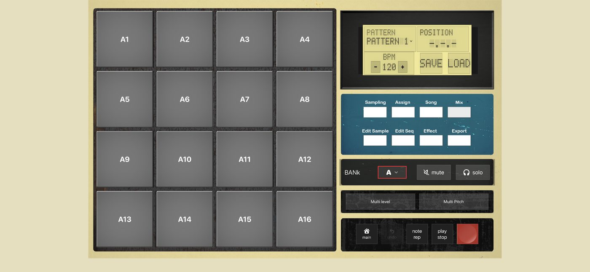
LCD
Shows the name of the pattern currently playing, the playback position
and the BPM. Projects are saved and loaded from here.
Function buttons
Take you to the editing screens — sampling, sample editing, sequence
editing and the rest.
Pad bank, mute and solo
Switch pad banks, and mute or solo individual pads.
Multi buttons
Multi Level and Multi Pitch spread a single pad across the grid in 16
steps of velocity or tune, so you can play it expressively.
Transport
Record and play the sequence. The home button brings you back to this
screen from anywhere.
Pads
Press a pad to play the sample assigned to it.
SCREENSampling
Record an external source, or the audio the app itself is
playing, and bring it in as a sample. Open it with Sampling on the
top screen.
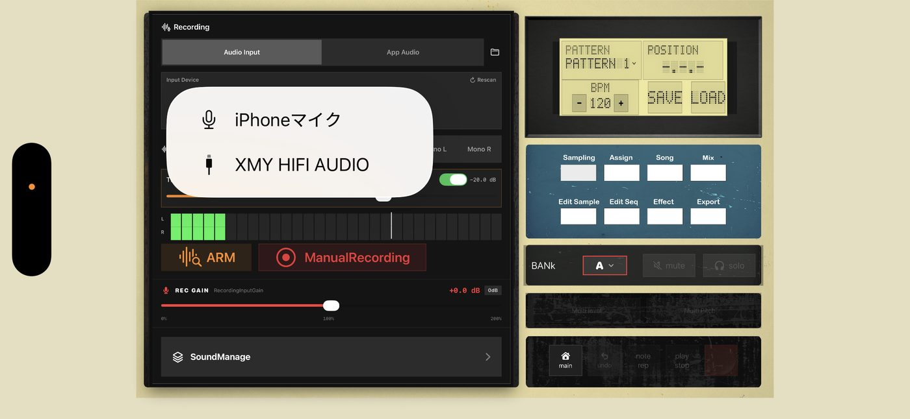
Audio Input / App Audio
Choose whether to record an external input such as a microphone, or the
sound the app is currently playing.
Input device
Pick the microphone or audio interface to record from.
Level meters (L / R)
Show the incoming signal in real time.
ARM
Puts recording on standby. With ARM on, recording starts by itself the
moment sound arrives.
Manual Recording
Starts and stops recording by hand, from the moment you press it.
REC GAIN
Sets the input level for recording, from 0% to 200%.
Sound Manage
Opens the list of samples you have recorded or imported.
SCREENSample Edit
Edit a sampled sound on its waveform. Open it with
Edit Sample on the top screen.
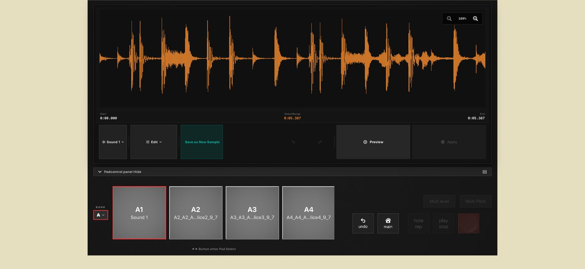
Waveform
Shows the sample. The icons at the top right zoom in and out.
Start / Select Range / End
The start, length and end of the current selection.
Sample name
The sample being edited. Tap it to switch to a different one.
Edit
Opens the editing menu — slice, reverse and the rest. See the next
section.
Save as New Sample
Saves your edit as a new sample, leaving the original alone.
Preview
Auditions the result before you commit to it.
Apply
Commits the edit.
Pad row
Selects which pad's sample you are editing.
SCREENEdit menu
Opened from Edit on the Sample Edit screen. Each
operation applies to the range you have selected.
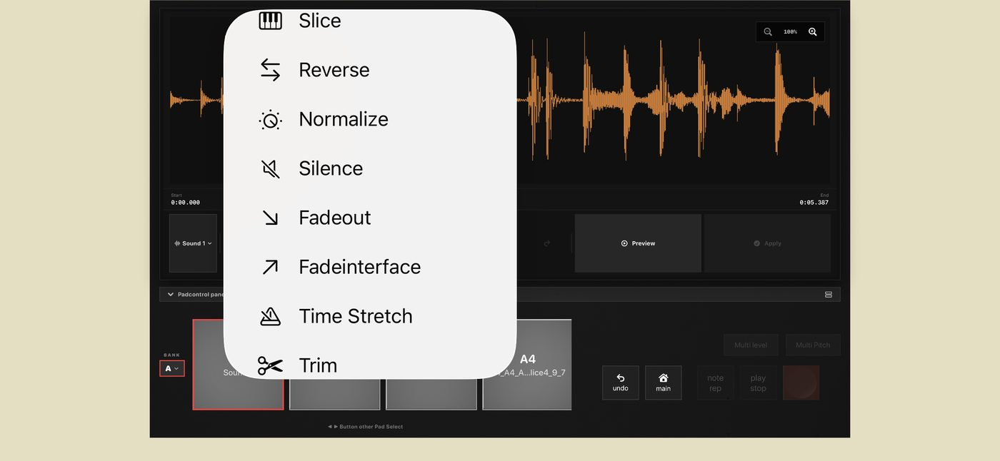
Slice
Splits the waveform across several pads. Covered in the next three
sections.
Reverse
Plays the waveform backwards.
Normalize
Raises the level so the loudest peak sits at maximum.
Silence
Silences the selected range.
Fade Out
Fades the level down towards the end of the selection.
Fade In
Fades the level up from the start of the selection.
Time Stretch
Changes the pitch without changing the length, or stretches the length
itself.
Trim
Keeps only the selected range and discards the rest.
SLICEBasics
Splits one sample into several sounds and puts each on its
own pad. Open it with Edit → Slice.
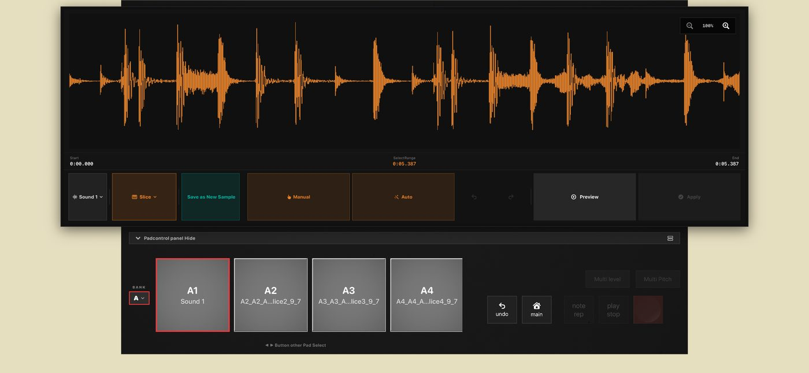
Sample name
The sample being sliced.
Slice
Opens the slice menu.
Save as New Sample
Saves the unsliced sample as a new one.
Manual
Add slice points by hand while watching the waveform.
Auto
Analyses the waveform and slices at the transients automatically.
Preview / Apply
Audition the result, then commit it.
SLICEManual slicing
Choosing Manual lets you place markers on the
waveform yourself.
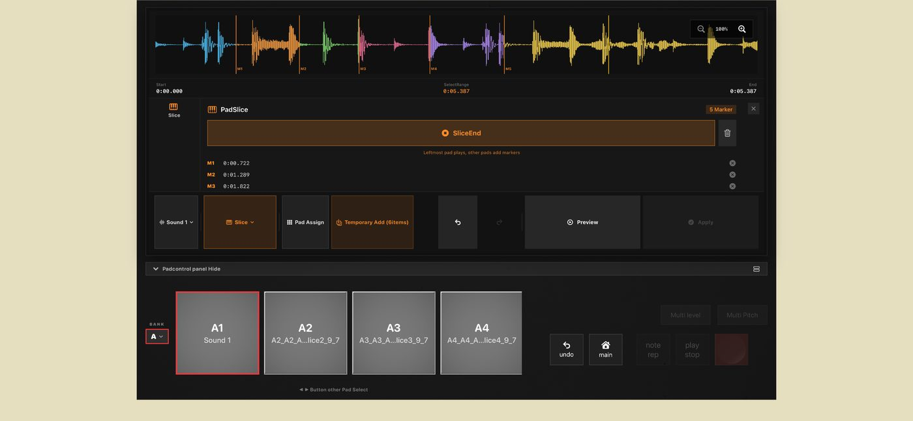
Markers (M1, M2 …)
The dividing lines you have added. The leftmost pad plays the sample;
the other pads add a new marker at the point playback has reached.
Slice End
The end point of the slice currently selected.
Marker list
Lists the time position of every marker. The × icon deletes one.
Pad Assign
Assigns the slices you have made to pads.
Temporary Add
Adds the slices to the temporary list. The count is shown on the
button.
SLICEAuto slicing
Choosing Auto analyses the changes in level and finds
the slice points for you. Every detected point appears as a marker on the
waveform.
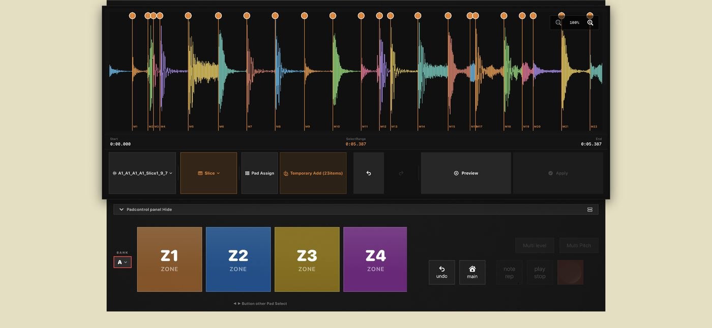
Sensitivity
Move it right to catch smaller changes in level, which produces more
slices.
Candidates
How many slice points the current sensitivity has found.
Auto Slice
Runs the analysis and places the markers.
Save as New Sample
Saves the result as a new sample.
SLICEAssigning to pads
From Pad Assign, the slices you have made are placed
onto pads in one go.
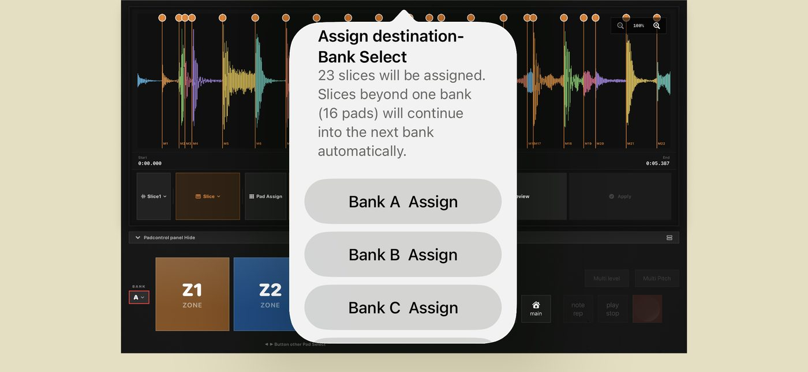
Assignment summary
Shows how many slices were found and how they will be laid out. If
there are more slices than the 16 pads in a bank, the remainder continues
into the next bank.
Bank assign
Chooses the bank to start from. The slices are placed in order across
that bank's pads — A1, A2 and so on.
SCREENAssign
Puts a sound on a pad and sets how it plays. Open it with
Assign on the top screen.
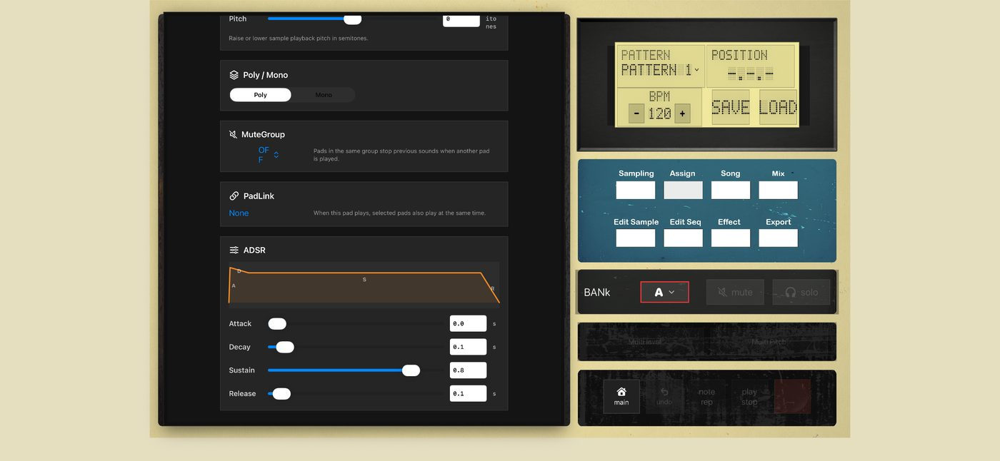
Sound
The sample on this pad. Sample Select swaps it for another.
Tune
Shifts playback pitch in semitones.
Poly / Mono
Poly lets notes overlap; Mono plays only one note at a time.
Mute Group
Pads sharing a group number cut each other off — the usual way to set
up an open and closed hi-hat.
Pad Link
Sets another pad to sound at the same time as this one.
ADSR
Shapes the level over the life of the note. Attack is how fast it
arrives, Decay the initial fall, Sustain the level it holds, and Release
the tail after you let go.
SCREENSequence Edit
Edits a recorded pattern step by step. Open it with
Edit Seq on the top screen.
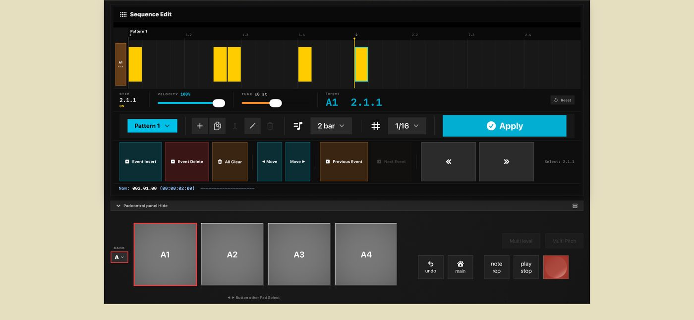
Timeline
The steps recorded for the pad you have selected.
Step / Velocity / Tune / Target
The position, level, pitch and target pad of the selected step. All of
them can be adjusted here.
Pattern
Chooses the pattern to edit.
Apply
Commits the change.
Event Insert / Delete / All Clear
Adds or removes a step, or clears the whole pattern.
Move / Previous Event / Next Event
Nudges the selected step, or jumps the selection to another one.
Pad selection
Switches which pad — which track — you are editing.
SCREENSong Mode
Chains patterns together into the running order of a whole
track. Open it with Song on the top screen.
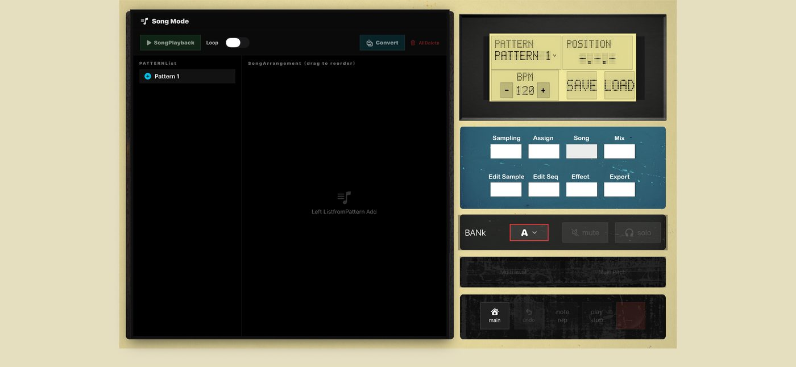
Song Playback / Loop
Plays the song you have built. With Loop on it repeats.
Convert / All Delete
Convert turns the whole song into a single pattern. All Delete clears
the arrangement.
Pattern list
Every pattern in the project. The + button adds a new one.
Song arrangement
Drag patterns over from the list and order them to build the song.
SCREENEffects
Applies effects to the sound of individual pads. Open it
with Effect on the top screen.
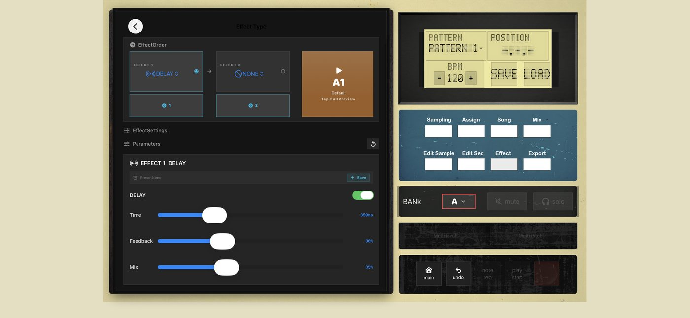
Pad Select
Tap the pads you want to affect. You can select more than one.
Group Select
Selects a whole group of pads at once.
Effect Settings
Sets the effect type and its parameters for the pads you selected.
Sound Type Settings
Sets the sample rate and bit depth character applied to the pad.
Effect Order (Effect 1 / Effect 2)
Chooses two effects and the order they run in.
Parameters
The detailed controls for the chosen effect — for a delay, time,
feedback and mix.
SCREENMix
Balances the level of every pad. Open it with Mix on
the top screen.
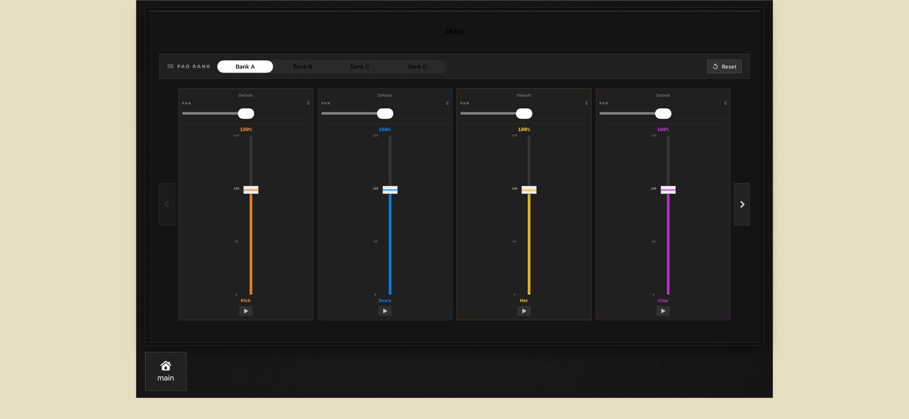
Pad bank
Switches which bank you are adjusting.
Reset
Returns the faders in the current bank to their default.
Pan
Places the sound left or right.
Volume faders
Set each pad's level, from 0% to 150%.
Play button
Auditions that pad.
SCREENSound Management
Lists and manages the samples you have recorded and sliced.
Open it with Sound Manage.
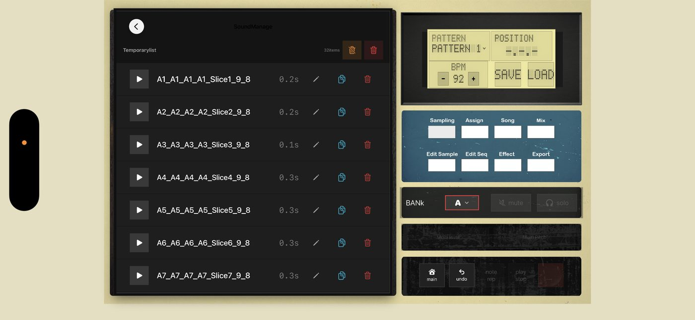
Temporary list
Every sound you have made so far, with the count shown.